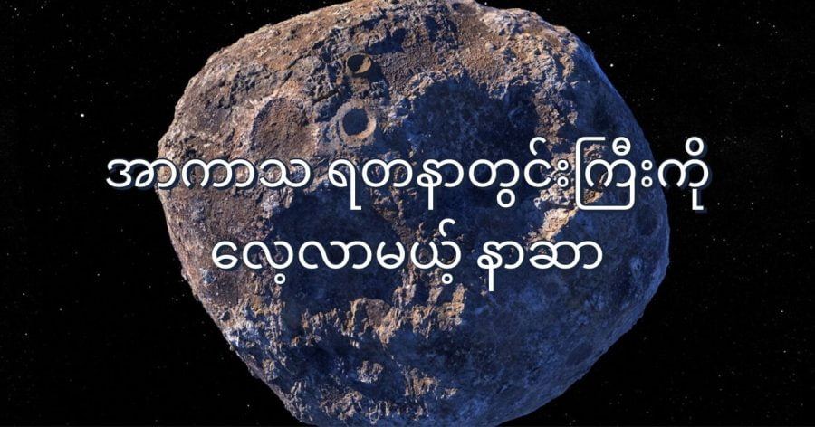

နေအဖွဲ့အစည်းထဲမှာ ရှိနေတဲ့ ဂြိုလ်သိမ် (asteroid) တွေ ထဲမှာ တန်ဖိုးအကြီးဆုံးလို့ သတ်မှတ်ထားခြင်း ခံရတဲ့ ဂြိုလ်သိမ် တစ်ခုကို လေ့လာဖို့ စူးစမ်းလေ့လာရေး ယာဉ်တစ်စီး စေလွှတ်ဖို့ နာဆာက စီစဉ်နေပါတယ်။ ဒီဂြိုလ်သိမ်ရဲ့ တန်ဖိုးဟာ ပျမ်းမျှ ဒေါ်လာ ကွင်တီလီယမ် ၇၀၀ တန်ဖိုးရှိတယ်လို့ ဆိုပါတယ်။ တစ် ကွင်တီလီယံ (Quintillion = 1,000,000,000,000,000,000) ဟာ ထရီလီယန် တစ်သန်းနဲ့ တန်ဖိုး ညီမျှပြီး တစ်ထရီလီယံ ကတော့ သန်းပေါင်း တစ်သန်းနဲ့ တန်ဖိုး ညီမျှပါတယ်။ ဒီပမာဏ တန်ဖိုးဟာ ကမ္ဘာပေါ်မှာ မရှိတဲ့ ငွေကြေးပမာဏ တန်ဖိုးလဲ ဖြစ်ပါတယ်။
အကယ်လို့ ဒီတန်ဖိုး မရှိဘူး ဆိုရင်တောင် ဒီ ဂြိုလ်သိမ်ရဲ့ တန်ဖိုးဟာ အနည်းဆုံးတော့ ကွင်တီလီယံ ပေါင်း ၁၄၀ ရှိပါတယ်တဲ့။ သိပ္ပံပညာရှင်တွေက ဒီ ဂြိုလ်သိမ်ရဲ့ အနည်းဆုံး ၂၀ ရာခိုင်နှုန်းဟာ သတ္တုတွေနဲ့ ဖွဲ့စည်းထားတာ မို့ပါတဲ့။
Psyche 16 (ဆိုက်ခီ ၁၆) လို့ အမည်ပေးထားတဲ့ ဒီ ဂြိုလ်သိမ်ဆီကို သွားမယ့် အာကာသ စူးစမ်းရှာဖွေရေး ယာဉ်ကို ၂၀၂၂ ထဲမှာ နာဆာက လွှတ်တင်မှာ ဖြစ်ပါတယ်။ ဒီယာဉ်ဟာ ၂၀၂၆ မှာ ဒီ ဂြိုလ်သိမ်ဆီ ရောက်ရှိသွားမှာ ဖြစ်ပါတယ်။ ဒါဟာ အာကာသ စူးစမ်းရှာဖွေရေး ယာဉ်တစ်စီး အတွက် အတော်လေး မြန်တဲ့ အချိန်ကာလပဲ ဖြစ်ပါတယ်။ ဒီလို မြန်အောင် အင်္ဂါဂြိုလ်ရဲ့ မြေဆွဲအားကို လောက်လေးလို အသုံးပြုပြီး အရှိန်မြှင့်တင်မှု ပြုလုပ်သွားမှာ ဖြစ်ပါတယ်။
(မြန်မာ့ သိပ္ပံ (Myanmar Scientist) မှ ဆောင်းပါးများကို ခွင့်ပြုချက် မရရှိပဲ ပြန်လည် ကူးယူ ဖေါ်ပြခြင်း မပြုပါရန် လေးစားစွာ ပန်ကြား အပ်ပါသည်။)
ဒီ ဂြိုလ်သိမ်ရဲ့ အလေးချိန်၊ အရွယ်အစား၊ ပုံသဏ္ဍာန်၊ လည်ပတ်နှုန်း၊ ဓါတ်ဖွဲ့စည်းမှု၊ သိပ်သည်းဆ၊ အလင်းပြန်နှုန်း အစရှိတာတွေကို သိရှိရဖို့ ချီလီ နိုင်ငံ (Chile) မှာ ရှိတဲ့ Atacama Large Millimeter/submillimeter Array telescope (or ALMA) တယ်လီစကုပ် မှန်ပြောင်းကြီးကို အသုံးချ ပြီး လေ့လာခဲ့တာ ဖြစ်ပါတယ်။ နောက်ပြီး ဒီ ဂြိုလ်သိမ်ရဲ့ မျက်နှာပြင်က ပိုလာ အလင်းပြန် မှုကိုလဲ လေ့လာခဲ့ ကြပါတယ်။ (ပိုလာ အလင်းဟာ ရိုရိုးအလင်းနဲ့ မတူပါဘူး။ ရိုးရိုး အလင်းမှာ အလင်းလှိုင်းတွေဟာ လားရာ direction ပေါင်းစုံကို တုန်ခါပေမယ့် ပိုလာ အလင်း polarized light မှာတော့ အလင်းလှိုင်းတွေဟာ ရေပြင်ညီ တစ်ခုထဲမှာပဲ တုန်ခါနေ ကြပါတယ်။ ဒီ ပိုလာ အလင်းရောင်ကို ထောက်လှမ်းပြီး သတ္တု ပမာဏ ကို ခန့်မှန်းကြတာပဲ ဖြစ်ပါတယ်)။
The Planetary Science Journal မှာ ပညာရှင်တွေက ဒီသုတေသန လေ့လာပြီး တွေ့ရှိချက်တွေကို တင်ပြခဲ့ပါတယ်။ ဒီ ပညာရှင်တွေရဲ့ လေ့လာချက်အရ ဒီ Psyche 16 ဂြိုလ်သိမ်ဟာ အနည်းဆုံး သတ္တု ၂၀ ရာခိုင်နှုန်းနဲ့ ဖွဲ့စည်းထားတယ်လို့ ဆိုပါတယ်။ ဒီ့ထက်တောင်မှ ပိုချင်ပိုဦးမယ်လို့လဲ ဆိုပါတယ်။
ထူးခြားတာ တစ်ခုကတော့ သူတို့ မျှော်လင့် ထားသလိုမျိုး ပိုလာ အလင်းပြန်တာ သိပ်မတွေ့ရတာပဲ ဖြစ်ပါတယ်။ ထုံးစံကတော့ ပြောင်လက်တဲ့ သတ္တုတွေဟာ ပိုလာ အလင်းပြန်အား ကောင်းကြတာပဲ ဖြစ်ပါတယ်။ ပညာရှင်တွေကတော့ သတ္တု ပမာဏ များတဲ့ ဂြိုလ်သိမ်တွေက ပိုလာ အလင်းပြန်အား နည်းလို့ ဖြစ်လိမ့်မယ်လို့ ယူဆကြပါတယ်။
ဘာပဲ ဖြစ်ဖြစ် ဒီ အာကာသ လေ့လာရေး ခရီးစဉ်နဲ့ ပါတ်သက်လို့တော့ အတော်လေး စိတ်လှုပ်ရှား နေကြပါတယ်။ လက်ရှိနည်းပညာတွေနဲ့ သတ္တုနဲ့ သံယံဇာတတွေ တူးဖော်မှုတော့ ပြုလုပ်နိုင်လိမ့် အုံးမှာ မဟုတ်ပါဘူး။
နာဆာရဲ့ စူးစမ်းလေ့လာရေး ခရီးစဉ်က အဓိက ဒီ ဂြိုလ်သိမ်နဲ့ ပါတ်သက်တဲ့ အချက်အလက်တွေ ရှာဖွေစုဆောင်းမှု ပြုလုပ်ဖို့ပဲ ဖြစ်ပါတယ်။ သူ့ရဲ့ မြေဆွဲအား ဘယ်လောက်ရှိလဲ၊ သံလိုက်စက်ကွင်း ရှိနေမလား၊ ဒြပ်ဖွဲ့စည်းမှု က ဘာတွေ ဖြစ်မလဲ ဆိုတဲ့ မေးခွန်းတွေ အပြင် အများ သိချင်နေ ကြတာက ဒီ ဂြိုလ်သိမ်ကြီးဟာ ယခင်က ဂြိုလ်ကြီး တစ်လုံး ပျက်စီးသွားပြီး ကြွင်းကျန်ရစ်ခဲ့တဲ့ အလယ် ဗဟိုက အူတိုင် ဖြစ်နေမလား ဆိုတဲ့ မေးခွန်းပဲ ဖြစ်ပါတယ်။
Reference: NASA to Study a $700 Quintillion ‘Goldmine’ Asteroid
အာကာသ ရတနာတွင်းကြီးကို လေ့လာမယ့် နာဆာ

August 13, 2021
Other Posts
- ကမ္ဘာနဲ့ အနီးဆုံး Black Hole တွင်းနက်ကြီးတစ်ခု ရှာတွေ့
- ဂြိုဟ်တုဖျက်စနစ် ရုရှား စမ်းသပ်
- Hubble တယ်လီစကုပ်ကြီး၏ “စိတ်လှုပ်ရှားဖွယ် တွေ့ရှိချက်” ၃၀ ရက်နေ့တွင် တင်ပြမည်ဟု နာဆာကြေငြာ
- မဲဆောက် အဝင်က ကုန်းတက်ကို ကားတွေ လိမ့်တက်တဲ့ သံလိုက်တောင်
- စကြာဝဠာ အတွင်းက ကိုယ်ပျောက် တံတိုင်းများ
- Drone တွေကို ပစ်ချမယ့် Drone Gun Tactical
- ဆလိုဗက် နိုင်ငံထုတ် ၁၅၅မမ Zuzana 2 ယာဉ်တင် ဟောင်ဝစ်ဇာ
- ဂျွမ်းပစ်သွားတဲ့ အပြည်ပြည်ဆိုင်ရာ အာကာသ စခန်းကြီး
- အိုင်းစတိုင်း၏ လက်ရေးစာတမ်း ဒေါ်လာ ၁၃ သန်းနှင့် ရောင်းချ
- Singapore Maths စင်္ကာပူနည်းနဲ့ သင်္ချာသင်မယ်